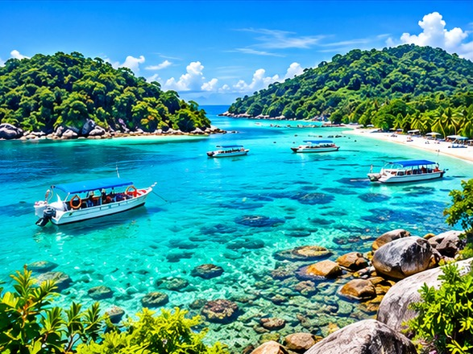

منتجع برهنتيان آيلاندPerhentian Island Resort
📍 Perhentian Besar
منتجع على شاطئ تيلوك باوه ببيسار
📍 خرائط المكان ↗
مجموعة جزر ساحلية، أبرزها برهنتيان الكبرى والصغرى، وتتميز بالشواطئ والسباحة والرحلات البحرية.
جزيرتان رئيسيتان: بيسار الهادئة وكيشيل التي تضم قرى وخيارات اقتصادية أكثر. التنقل بالقوارب والمشي.
منتجع على شاطئ تيلوك باوه ببيسار
📍 خرائط المكان ↗منتجع على بيسار
📍 خرائط المكان ↗منتجع فخم في كيشيل
📍 خرائط المكان ↗منتجع على بيسار
📍 خرائط المكان ↗منتجع قرب فلورا باي
📍 خرائط المكان ↗شاطئ مشهور على كيشيل
📍 خرائط المكان ↗خليج على كيشيل
📍 خرائط المكان ↗شاطئ قرب منتجع برهنتيان آيلاند
📍 خرائط المكان ↗خليج هادئ في بيسار
📍 خرائط المكان ↗منطقة سنوركلينغ وشاطئ
📍 خرائط المكان ↗زيارة حسب إرشادات الحماية
📍 خرائط المكان ↗بالقرب من كورال باي في كيشيل
📍 خرائط المكان ↗قرب الممر بين كورال باي ولونغ بيتش
📍 خرائط المكان ↗مطعم محلي على بيسار
📍 خرائط المكان ↗مطعم في كيشيل؛ تحقق من الموسم
📍 خرائط المكان ↗مطعم بمنتجع على كيشيل
📍 خرائط المكان ↗مطعم محلي في الجزر؛ تحقق من التشغيل
📍 خرائط المكان ↗إقامة في كيشيل
📍 خرائط المكان ↗إقامة على لونغ بيتش
📍 خرائط المكان ↗إقامة في بيسار
📍 خرائط المكان ↗إقامة بسيطة في بيسار
📍 خرائط المكان ↗إقامة محلية
📍 خرائط المكان ↗في البر الرئيسي؛ نقطة العبور الرئيسية إلى الجزر
📍 خرائط المكان ↗مطار قرب كوتا بهارو على البر الرئيسي
📍 خرائط المكان ↗بديل على البر الرئيسي في ترنغانو
📍 خرائط المكان ↗قوارب محلية بحسب الطقس والموسم؛ لا يوجد مطار أو قطار على الجزر
📍 خرائط المكان ↗مسجد مسجل رسميًا في برهنتيان كيشيل
📍 خرائط المكان ↗المعلومات إرشادية، وأسماء المنتجعات والمطاعم لا تعني توفرها في جميع المواسم. تحقق من الحجز والتشغيل ومواعيد العبارات والرحلات قبل الانطلاق. المرافئ والمطارات الموجودة على البر الرئيسي مميزة في وصفها. روابط الخرائط بحث بالاسم وليست إحداثيات مؤكدة. لا يُفترض أن كل مطعم حلال ما لم يتم التحقق من شهادة أو منشأة الطعام.
المعلومات إرشادية. تحقق من تشغيل الرحلات البحرية وحالة الطقس ومتطلبات الزيارة قبل المغادرة. الصور فنية توضيحية وليست صورًا توثيقية للمعالم.